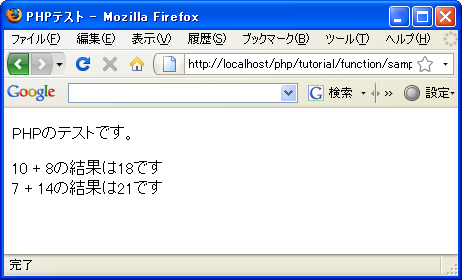

戻り値を使って関数から値を返す
関数は呼び出す時に引数を使って値を渡すことが出来ますが、関数内で何らかの処理をした結果として今度は関数から値を呼び出し元に返すことが出来ます。例えば数値計算をするような関数であれば計算結果を呼び出し元に返したり、文字列の処理をするような関数であれば処理した結果を返すことが出来ます。
関数から値を返すにはreturn文を使います。書式は次の通りです。
return 戻り値;
呼び出し元に返したい値を戻り値として指定します。戻り値には数値や文字列などの他に配列など全ての値を指定可能です。なおreturn文は関数ではないので戻り値の指定の時に括弧は不要です。
戻り値が返された場合、関数を呼び出した「関数名(引数)」の評価が戻り値となります。戻り値を保存するには「変数 = 関数名(引数)」のように変数に対して格納して下さい。例えば次のように記述します。
function plus($num1, $num2){
$sum = $num1 + $num2;
return $sum;
}
$sum = plus(10, 8);
print '加算の結果は'.$sum.'です';
print '加算の結果は'.plus(7, 14).'です';
上記ではいったん変数に戻り値を格納して使用している場合と、関数の呼び出しそのものを直接記述しています。
なお関数の中でreturn文が実行されると戻り値を返すと共に関数内の処理をそこで終了します。つまりreturn文が実行されると処理は関数を呼び出した元に処理が移ります。次の例を見てください。
function plus($num1, $num2){
$sum = $num1 + $num2;
return $sum;
print 'ここは処理されません';
}
$sum = plus(10, 8);
関数内でreturn文が実行されると処理は呼び出し元に戻りますので「print 'ここは処理されません';」は決して実行されません。
また次のようにreturn文を複数記述し条件に応じて戻り値を変更することも可能です。
function warizan($num1, $num2){
if ($num2 == 0){
return NULL;
}
return $num1 / $num2;
}
$result = warizan(10, 8);
上記では2番目の引数の値が0だった場合は「NULL」を返し、そうでない場合は1番目の引数を2番目の引数で除算した結果を返します。
なお引数とは異なり戻り値として指定できる値は1つだけです。ただし配列も指定が可能なので配列を使うことで実質的に複数の値を返すことも可能です。
サンプルプログラム
では簡単なプログラムで試して見ます。
<!DOCTYPE html PUBLIC "-//W3C//DTD XHTML 1.0 Transitional//EN"
"http://www.w3.org/TR/xhtml1/DTD/xhtml1-transitional.dtd">
<html xmlns="http://www.w3.org/1999/xhtml" xml:lang="ja" lang="ja">
<head>
<meta http-equiv="Content-Type" content="text/html;charset=UTF-8" />
<title>PHPテスト</title>
</head>
<body>
<p>PHPのテストです。</p>
<p>
<?php
function plus($num1, $num2){
$sum = $num1 + $num2;
return $sum;
}
$sum = plus(10, 8);
print '10 + 8の結果は'.$sum.'です<br />';
print '7 + 14の結果は'.plus(7, 14).'です';
?>
</p>
</body>
</html>
上記のファイルをWWWサーバのドキュメントルート以下に設置しブラウザからアクセスすると次のように表示されます。

( Written by Tatsuo Ikura )

著者 / TATSUO IKURA
初心者～中級者の方を対象としたプログラミング方法や開発環境の構築の解説を行うサイトの運営を行っています。